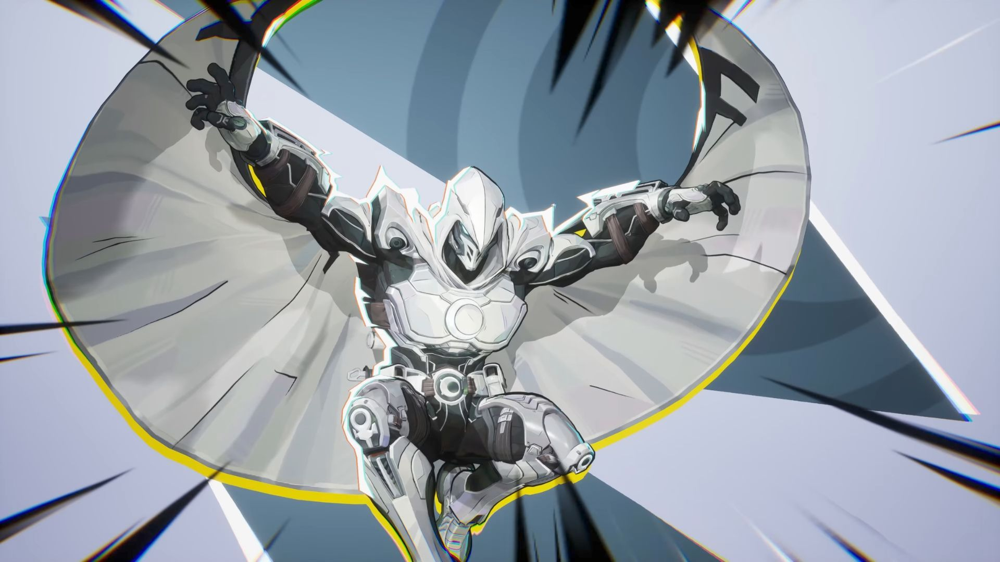
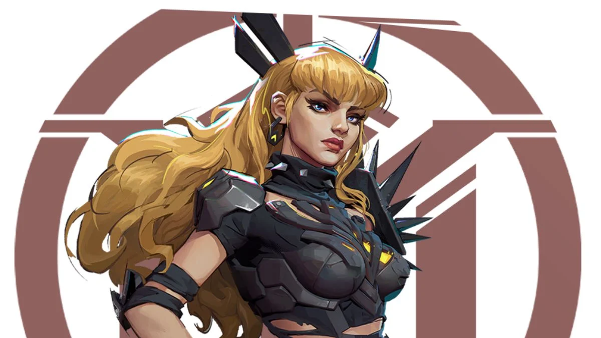
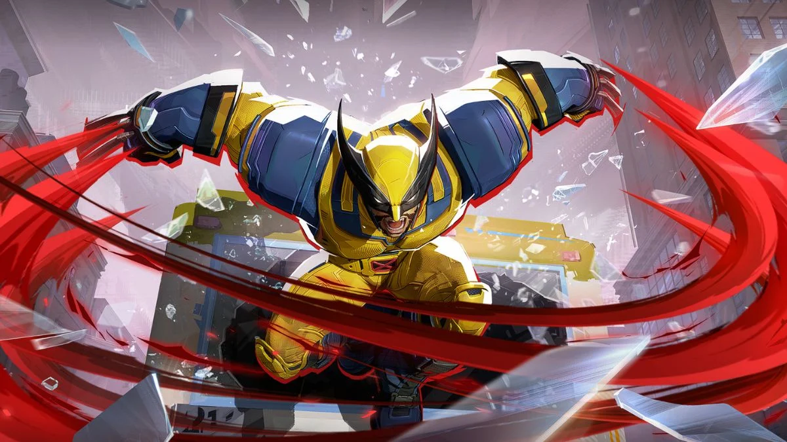

En que situaciones es ideal elegirlos.

Moon Knight destaca en escenarios abiertos donde puede mantener una distancia de seguridad mientras aplica un daño constante y preciso. Es especialmente útil para debilitar a los tanques desde lejos y utilizar sus proyectiles de rebote cuando los enemigos se encuentran agrupados, castigando cualquier error de posicionamiento con gran eficacia.

Magik es la opción perfecta para mapas con muchas coberturas donde se pueda jugar al flanqueo y al despiste. Su movilidad mágica a través de portales le permite aparecer en puntos ciegos para ejecutar ráfagas de ataques rápidos, siendo una amenaza letal que obliga al enemigo a estar mirando constantemente hacia atrás.

Wolverine debe utilizarse como una unidad de asalto constante contra equipos que carecen de movilidad suficiente para escapar de sus garras. Aprovechando su regeneración pasiva, es excelente para buscar duelos individuales y eliminar objetivos prioritarios, entrando y saliendo de la pelea para desgastar la moral y los recursos del oponente.